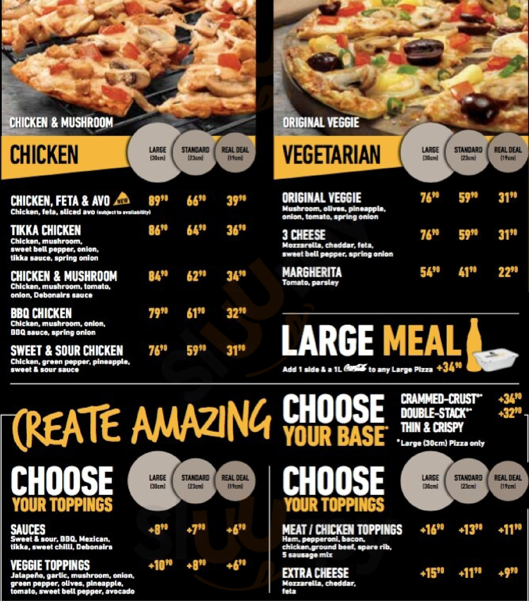
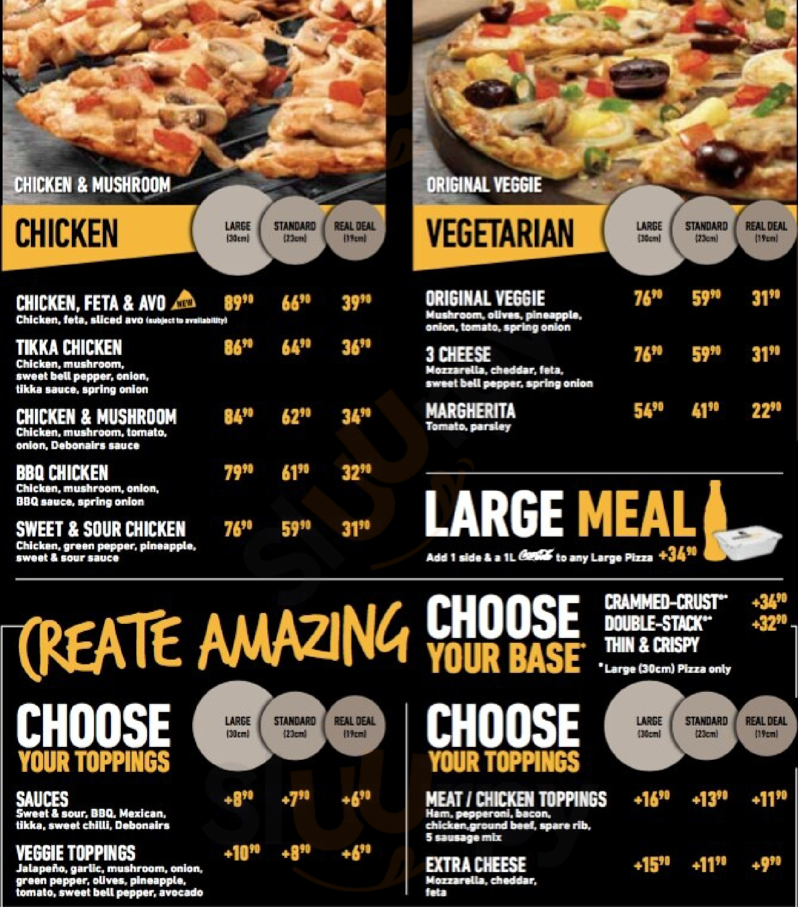

DEBONAIRES PIZZA
WHO ARE WE ?
Debonaires Pizza is a South African based pizza restaurant chain franchise founded in 1991 by Craig MacKenzie and Andrew Harvvey. McKenzie came up withthe idea and business model to found the company following a gap-year tytrip to Los Angeles when he was student at the University of KwaZulu-Natal.
The first restaurants were established in Pietermaritzburg, followed by Umhlanga and the Durban. The chain expanded rapidly and was acquired by Famous Brands in 1999.
The company has over 500 restaurants in 14 countries mostly located in Africa including Botswana, Dubai, Eswatini, Kenya, Malawi, Lesotho, Nigeria, Nmaibia, Sudan, Ethopia, South Africa and Angola.
The majority of its 546(2018) restaurants are locayed in South Africa, with 462 restaurants in the country. As of 2018, Debonaires Pizza was the largest pizza chain restaurant in South Africa.
ITEMS & MENUS
 
